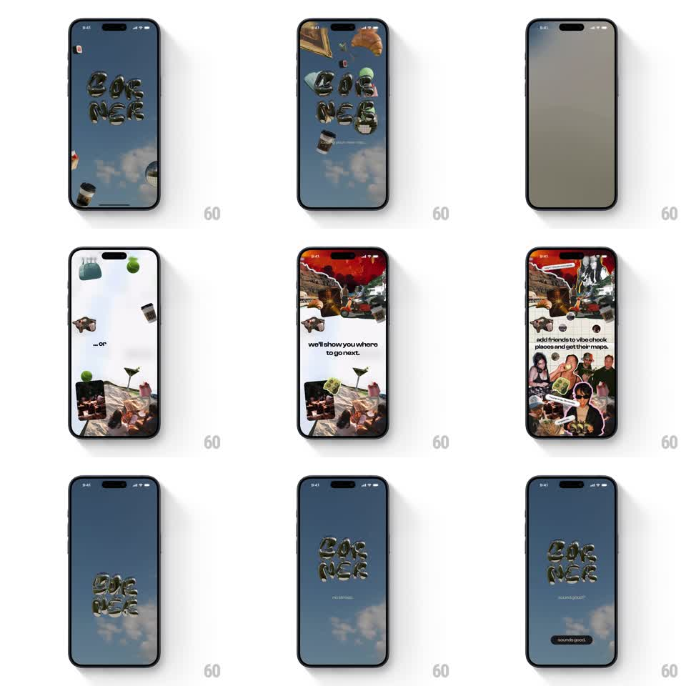

Media
Frame-by-frame

Rebuild this animation 1:1: Corner's splash intro - chrome balloon 3D letters spelling CORNER drift over a sky-blue backdrop among floating lifestyle objects (coffee cup, croissant, martini, handbag), then the camera pushes through into photo-collage story pages ("we'll show you where to go next.", "add friends to vibe check places and get their maps.") and lands back on the logo with a "sounds good" button.

Rebuild this animation 1:1: Corner's splash intro - chrome balloon 3D letters spelling CORNER drift over a sky-blue backdrop among floating lifestyle objects (coffee cup, croissant, martini, handbag), then the camera pushes through into photo-collage story pages ("we'll show you where to go next.", "add friends to vibe check places and get their maps.") and lands back on the logo with a "sounds good" button.
## Integration
Integration: stack-agnostic spec - springs given as stiffness/damping, timed motions as duration + curve; map every value to your framework and animation library of choice.
## Scene
Stage 1: sky-blue gradient with soft clouds; metallic silver balloon letters "CORNER" stacked in two lines, surrounded by small 3D props (coffee cup, croissant, green apple, cocktail glass, handbag) floating at various depths. Stage 2: full-bleed torn-paper photo collages (restaurant, bar, friends) with lowercase serif copy. Stage 3: back to the logo lockup with a dark pill button "sounds good".
## Motion spec
Pattern: floating physics collage + camera push-through, ~6s.
- Idle float: letters and props bob on independent paths (10-24px, 2.5-5s periods, randomized phase) with slight rotation sway (+-4deg).
- Camera push: on advance, the camera dollies forward (scale 1 -> 1.6, 700ms, ease-in) between the letters as they part to the edges and exit.
- Collage pages: photos slide in from alternating sides (spring ~260/20) with torn-edge masks; copy fades up (250ms).
- Return: camera pulls back (600ms, ease-out) as the letters regroup from the edges (spring ~240/18) and the button fades/scales in (250ms).
## Calibration
- The letters are reflective chrome balloons - flat type kills the effect.
- Props stay small and peripheral; they frame the wordmark, never cover it.
## Reduced motion
Static logo stage; collage pages cross-fade (250ms); no float or camera moves.
## Don't miss
- Copy is lowercase and casual: "we'll show you where to go next." / "add friends to vibe check places and get their maps."
- The CTA reads "sounds good" - not "Get started".